Grúas Bechan Servicio de grúas 24 horas en Viña del Mar y toda la quinta región
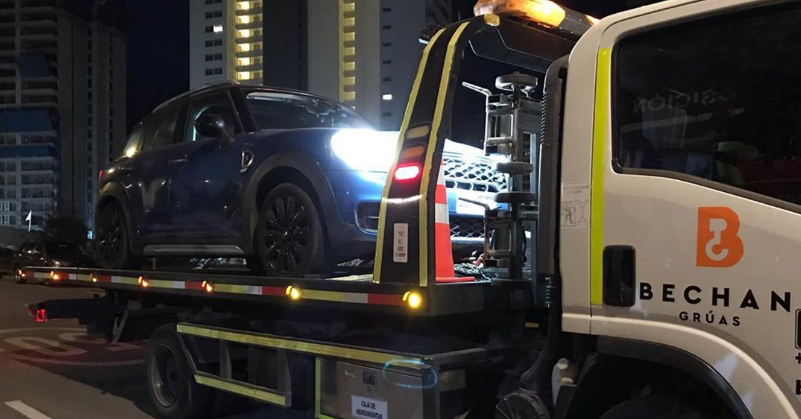
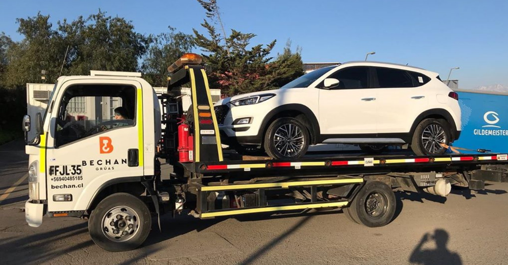
 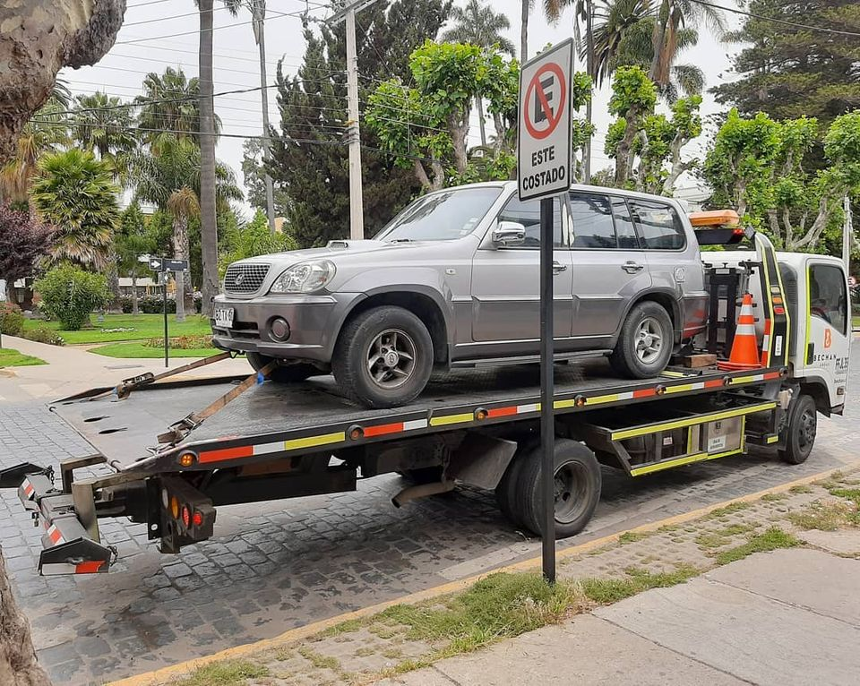
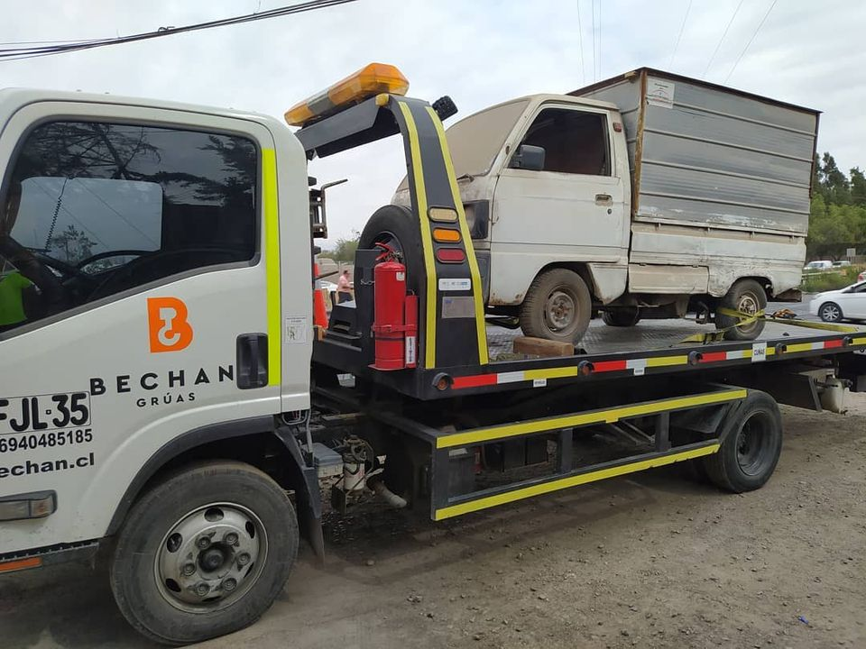
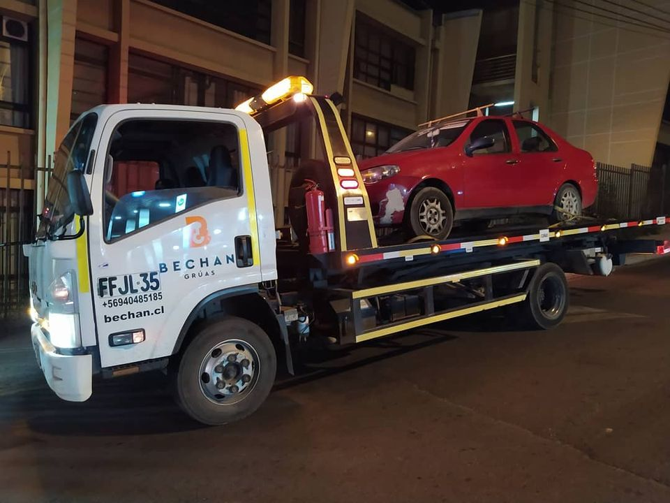
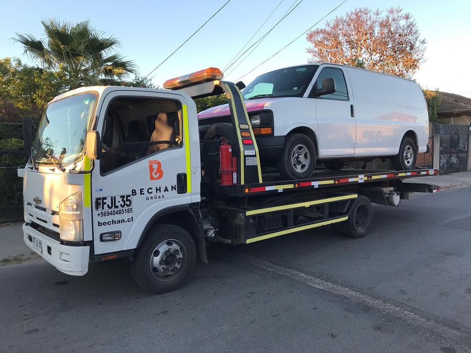
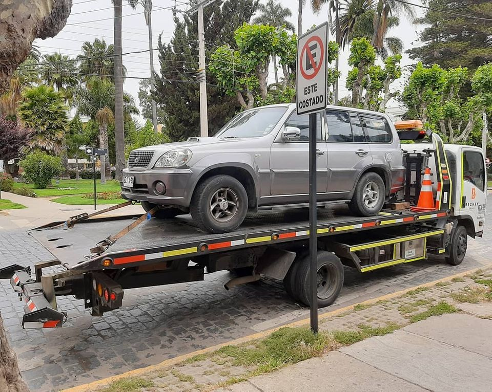
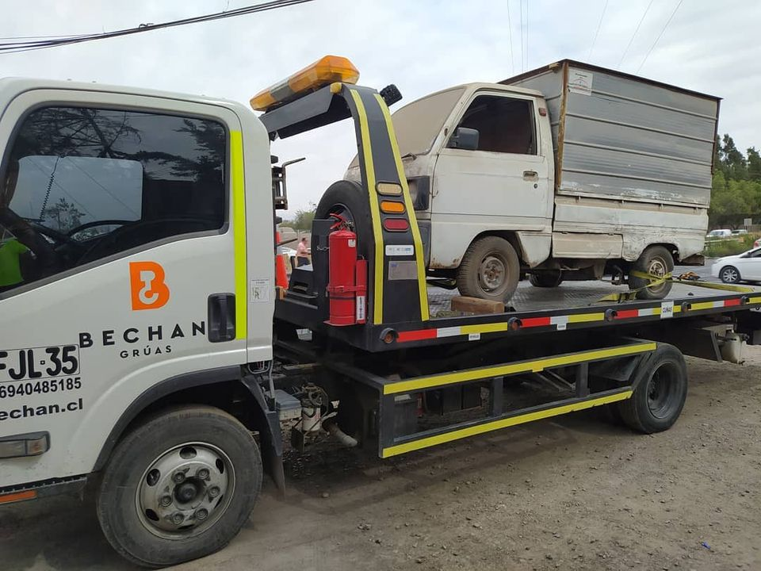
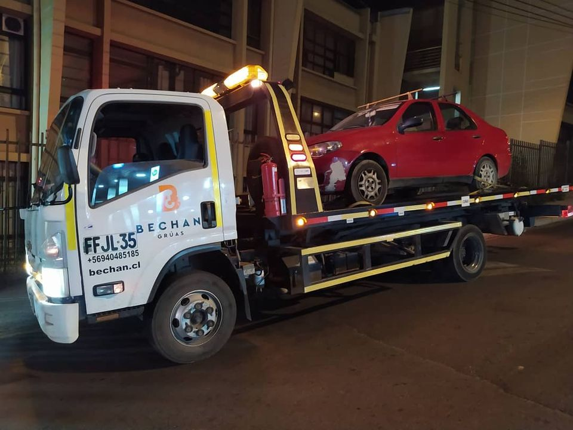
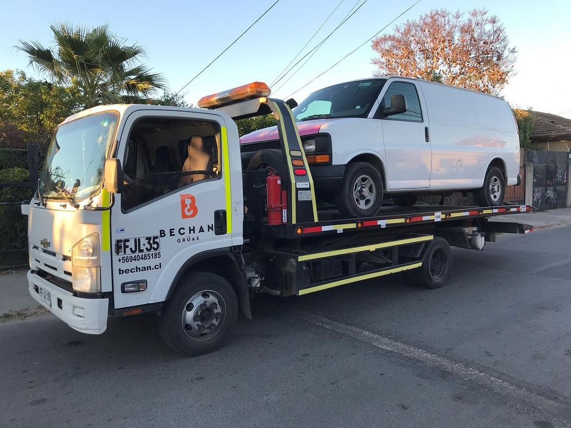
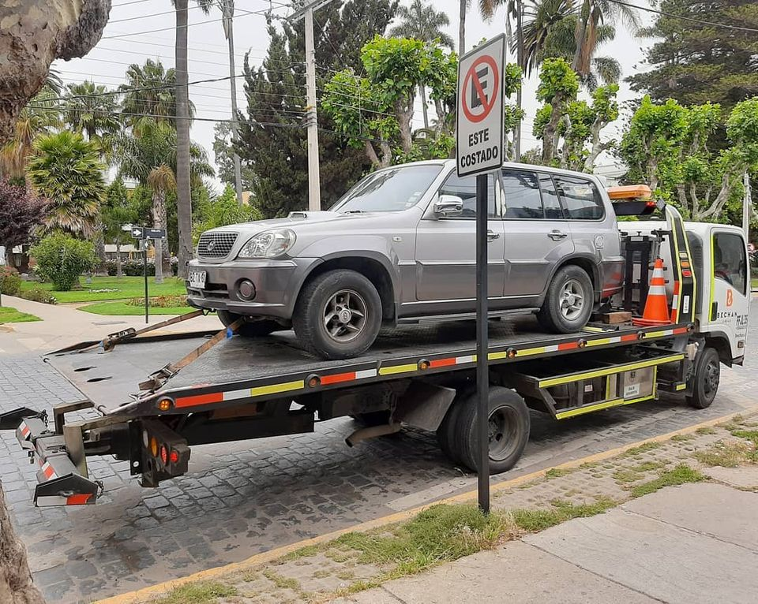
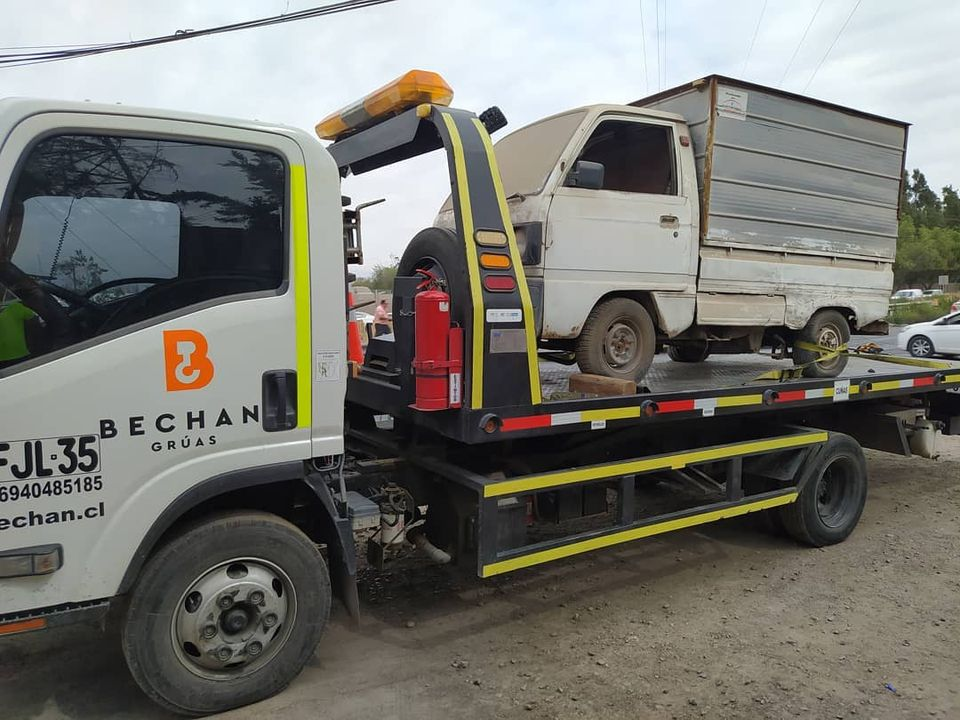
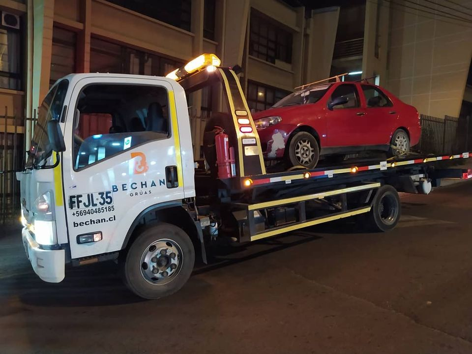
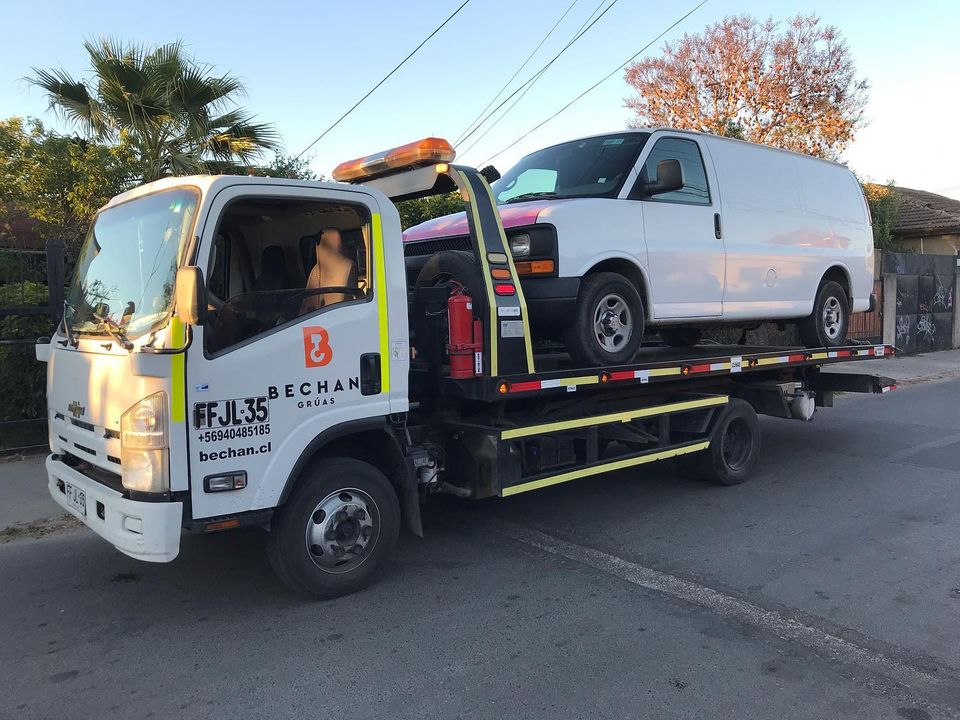
Grúa con cama hidrulica disponible 24/7 a un precio accesible.
Haga click en los botones para asistencia inmediata!
+56911111111
+56911111111
¿Necesitas un grúa? estamos a un click de distancia!
Servicios
Traslados y viajes de urgencia las 24 horas.
Puente de baterías.
Cambio de neumaticos y traslado de combustible.
Traslado a taller adherido o personal para asistencia a fondo.
© Copyright 2021, Bechan límitada
¿Dónde nos encontramos?
Ubicación: Etchevers Alto, Viña del mar.
Ubicación: Cabo de hornos, Quilpué.
Ubicación: Cabo de hornos, Quilpué.
Información de contacto.
Télefono: +569 1111 1111
e-mail: contacto@bechan.cl
e-mail: contacto@bechan.cl
Links de interés
Bechan.cl
Reviews de Google.
Reviews de Google.